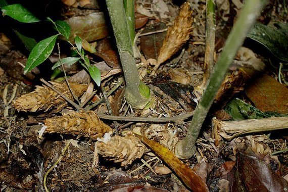
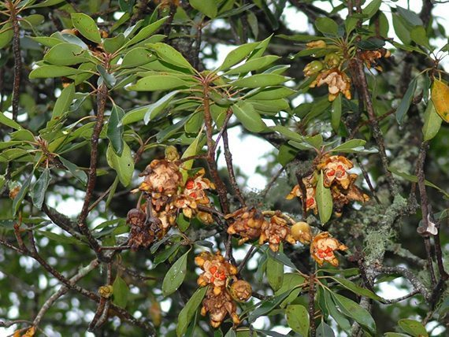

นายนันทศักดิ์ โชติชนะเดชาวงศ์ ผู้อำนวยการกองคุ้มครองภูมิปัญญาการแพทย์แผนไทยและพื้นบ้านไทย กรมพัฒนาการแพทย์แผนไทยและการแพทย์ทางเลือก กระทรวงสาธารณสุข (สธ.)
ได้ออกประกาศว่า ขณะนี้มีสมุนไพรไทย 22 ชนิด ที่เสี่ยงอาจจะสูญพันธุ์ เนื่องจากเป็นสมุนไพรที่เติบโตช้า บางชนิดต้องใช้ทั้งต้น ทั้งราก และต้องใช้บ่อยถึงจะรักษาอาการให้หายได้
โดยสมุนไพรที่กำลังจะกล่างถึงจะมีสมุนไพร 7 ตัวแรกได้ประกาศประกาศคุ้มครองและเป็นสมุนไพรที่ต้องควบคุม โดยหากใครมีสมุนไพร 7 ตัวนี้อยู่ในครอบครองไม่ได้ถือว่ามีความผิด
เพียงแต่ต้องแจ้งมาทางกระทรวงสาธารณะสุข(สธ.) ให้รับทราบว่ามีอยู่เท่าใด เพื่อที่จะจัดทำแผนส่งเสริมการปลูกต่อไป

สรรพคุณ
รากฝนกับน้ำดื่มเป็นยาช่วยลดไข้ในเด็ก รากต้มกับน้ำดื่มเป็นยาบำรุงน้ำนมของสตรี ใบฝนทาเป็นยาแก้ฝี

สรรพคุณ
แก้หวัด แก้ไอ อาการไอเรื้อรัง ตัวร้อน ออกหัดตัวร้อน รักษาท้องอืด ท้องเฟ้อ จุกเสียด

สรรพคุณ
บำรุงกำลัง บำรุงเพศ ชลอความแก่

สรรพคุณ
แก้หอบหืด แก้เสมหะ แก้น้ำเหลืองเสีย ช่วยขับโลหิต ยาแก้ลม

สรรพคุณ
แก้อาการหืด แก้อาการไอ บำรุงธาตุในร่างกาย ลดไขมันในเลือด
สรรพคุณ
บำรุงหัวใจ ยารักษาเบาหวาน แก้อาการปวดเข่า แก้ข้อเข่า แก้ข้อเท้าปวดบวม

สรรพคุณ
ช่วยบำรุงธาตุในร่างกาย บำรุงกำลัง ขับเสมหะ แก้อาการสะอึก แก้อาการคลื่นไส้ อาเจียน แก้อาการเบื่ออาหาร

สรรพคุณ
ลดความดันโลหิต ออกฤทธิ์กดต่อประสาทและกล้ามเนื้อ ใช้เป็นยาแก้บิดมูกเลือด
สรรพคุณ
ใช้รักษาเหงือกอักเสบ แก้ลม โลหิตเป็นพิษ รักษาอาการพิษในกระดูก ช่วยรักษาน้ำเหลืองเสีย
สรรพคุณ
แก้อาการอ่อนเพลีย ช่วยบำรุงกำลัง แก้อาการร้อนใน แก้หอบหืด แก้อาการอาเจียน

สรรพคุณ
บำรุงกำลัง บรรเทาอาการเจ็บคอ ใช้เป็นยาระบาย ขับเสมหะ
สรรพคุณ
ใช้เป็นยาแก้ไข้ ช่วยกระทุ้งพิษไข้หัว ใช้เป็นยาแก้หืด ใช้เป็นยาบำรุงหลังการคลอดบุตรของสตรี รักษาอาการชา

สรรพคุณ
ใช้เป็นยารักษาโรครำมะนาด แก้ท้องร่วง แก้อาเจียนเป็นเลือดและถ่ายเป็นเลือด ใช้เป็นยาบำรุงปอด ใช้ปรุงเป็นยารักษาแผลเรื้อรัง
สรรพคุณ
ช่วยรักษาลำไส้อักเสบ ช่วยเป็นยาขับปัสสาวะ เป็นยาบำรุงน้ำนมของสตรี แก้อาการปวดศีรษะข้างเดียว
สรรพคุณ
ถ่ายพิษต่างๆ ขับถ่ายน้ำเหลือง ถ่ายพิษไข้พิษเสมหะและโลหิต แก้ไข้ แก้ลม แก้เจ็บคอ แก้ต่อมทอนซิลอักเสบ แก้วัณโรคระยะบวม ขับเหงื่อ ขับพยาธิ ความดันเลือดสูง อัมพาต แก้ท้องผูก

สรรพคุณ
ประคบแก้อาการปวด ใช้ต้มกับน้ำดื่มแก้ไข้ แก้อาการจุกเสียด แก้ท้องอืด ท้องขึ้น ท้องเฟ้อ ปวดท้อง

สรรพคุณ
ต้นใช้แก้เลือดลมเดินไม่สะดวก ต้มน้ำดื่มแก้ไตพิการ แก้ปวดท้อง ขับพิษโลหิตและน้ำเหลือง เปลือกต้นใช้ตำพอกแผลสด ห้ามเลือด

สรรพคุณ
ขับลมในลำไส้ แก้แน่น แก้จุกเสียด บำรุงธาตุ ใช้ปรุงยาธาตุ แก้ธาตุพิการ

สรรพคุณ
ดอกใช้เป็นยาบำรุงหัวใจ ใช้เปลือกและดอกเป็นยาแก้ไข้ ช่วยขับลม เป็นยาแก้บิด ใช้เป็นยาถ่ายพยาธิ

สรรพคุณ
ช่วยบำรุงดวงจิต บำรุงธาตุ ช่วยชูกำลัง แก้อาการอ่อนเพลีย ส่วนใบอบเชยต้นมีสรรพคุณเป็นยาบำรุงธาตุ และบำรุงกำลัง ใช้ปรุงเป็นยานัตถุ์รับประทานแก้เบื่ออาหาร

สรรพคุณ
ใช้ต้มน้ำดื่มช่วยบำรุงร่างกาย ใช้เป็นยาเจริญอาหารสำหรับสตรีหลังคลอดบุตร แก้อาการร้อนในกระหายน้ำ ช่วยขับลม แก้บิด ใช้สมานแผล แก้พิษผิดสำแดง

สรรพคุณ
ช่วยทำให้จิตใจชุ่มชื่น แก้อาการจุกเสียดแน่นท้อง แก้อาการฟกช้ำดำเขียว แก้อาการปวดเมื่อย แก้เส้นเอ็นพิการ แก้อาการปวดเมื่อยเส้นเอ็น
สรรพคุณ
ใช้เป็นยาแก้ปวดศีรษะ คลายเครียด ใช้เป็นยาบำรุงหัวใจ บำรุงประสาท ช่วยบรรเทาอาการเจ็บคอได้ ช่วยขับลม แก้อาการท้องอืดได้ ช่วยบำรุงกระเพาะอาหารและลำไส้